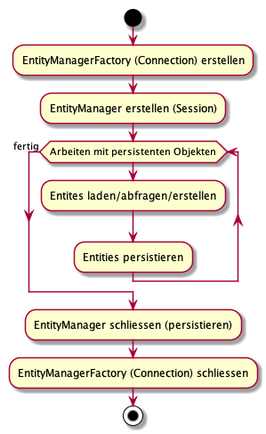

{% extends "../_base_template.html" %}
{% block title %}Lektion 20 - ORM{% endblock %}

{% block sections %}

<section data-markdown>
<textarea data-template>
<i class="fas fa-flask"></i> Umsetzen in der Praxis - ORM-Framework "Hibernate"
=============================

In der Praxis helfen ORM-Frameworks, dieses Mapping zwischen Objekten und der Datenbank vorzunehmen. ORM-Frameworks sind praktisch für alle
Sprachen / Frameworks vorhanden. In der Java-Welt hat sich [Hibernate](https://hibernate.org/orm/) durchgesetzt.

Wir wollen ein kleines Beispiel mit **Hibernate** in unserem BibSys-Prototypen umsetzen.

Hibernate ist recht komplex. Zudem gibt es mittlerweile verschiedene Arten, wie wir
Hibernate einsetzen können. Um die Sache noch komplizierter zu machen, kommt Java
mit der JPA (Java Persistence API), welche von Hibernate genutzt werden kann (oder auch nicht).

Wir beschränken uns auf ein ganz simples Beispiel:

* Wir benutzen **HyperSQLDB** (HSQLDB), eine einfache, in reinem Java implementierter
  SQL-Datenbank. Diese kann auch komplett ins Memory geladen werden.
* Wir benutzen **Hibernate** mit **JPA-Annotations** und dem **JPA-Framework**
* Wir erweitern unseren BibSys-Prototypen, sodass **Benutzer und Personen** vom ORM-Framework
  bereitgestellt wird.

Sie finden ein funktionierendes Beispiel-Projekt auf Moodle als Starthilfe.
</textarea>
</section>

<section data-markdown>
<textarea data-template>
<i class="fas fa-flask"></i> Hibernate-Setup: jars und persistence.xml
=============================

* Stellen Sie sicher, dass Sie die Hibernate jar-Files in Ihrem Eclipse-Build-Path haben:
  Das sind all die jar-Files, welche im Hibernate-zip unter `lib/required` zu finden sind.

* unter `src/META-INF/persistence.xml` wird die Datenbank-Konfiguration definiert. Hier die wichtigsten Ausschnitte:

```xml
<!-- Eine Datenbank-Verbindung wird "Persistence Unit" genannt: -->
<persistence-unit name="BibSys">
    <!-- Der verwendete Persistence-Provider, hier der JPA-Provider: -->
    <provider>org.hibernate.jpa.HibernatePersistenceProvider</provider>

    <!-- Alle Entity-Klassen müssen hier aufgeführt werden:  -->
    <class>business.entity.Benutzer</class>

    <properties>
        <!-- Datenbank-Treiber, hier der HSQLDB-Treiber: -->
        <property name="javax.persistence.jdbc.driver"
                  value="org.hsqldb.jdbc.JDBCDriver" ></property>

        <!-- Welchen SQL-Dialekt verwendetn wir? -->
        <property name="hibernate.dialect" value="org.hibernate.dialect.HSQLDialect" ></property>

        <!-- Die JDBC-Connection-URL, hier mit Pfad zu unserer DB: -->
        <property name="javax.persistence.jdbc.url"
                  value="jdbc:hsqldb:file:database/bibsys" ></property>

        <!-- Username/PW: -->
        <property name="javax.persistence.jdbc.user" value="sa" ></property>
        <property name="javax.persistence.jdbc.password" value="" ></property>

        <!-- Alle SQLs auf der Konsole ausgeben: -->
        <property name="hibernate.show_sql"
                  value="true" ></property>

        <!-- Automatische DB-Schema-Generierung: -->
        <property name="hibernate.hbm2ddl.auto" value="update" ></property>
    </properties>
</persistence-unit>
```
</textarea>
</section>

<section data-markdown>
<textarea data-template>
<i class="fas fa-flask"></i> Entity konfigurieren: Benutzer
=============================

Nun kommt **ORM** ins Spiel: Hibernate macht nun das Objekt-Relationale Mapping für uns.
Dazu muss Hibernate ein paar Infos zu unseren Klassen haben. Wir beginnen mit
einer einfachen Konfiguration unserer `Benutzer`-Klasse:

```java
// .....
// Wir teilen Hibernate mit, dass es sich hier um eine persistente Entity handelt,
// und dass die DB-Tabelle "BENUTZER" heissen soll:
@Entity
@Table(name = "BENUTZER")
public class Benutzer implements Serializable  {

    // Die DB-ID muss Hibernate bekannt gegeben werden, ebenso die
    // ID-Generier-Strategie:
	@Id
	@GeneratedValue(generator="increment")
	@GenericGenerator(name="increment", strategy = "increment")
	private Long id;
	public Long getId() {
		return id;
	}
	public void setId(Long id) {
		this.id = id;
	}

    // Einfache Werte (Strings, zahlen etc.) werden von Hibernate automatisch
    // erkannt, und auf Tabellensplaten gemappt:
	private String login;
	private String email;
	private String passwort;
	boolean admin = false;
	boolean bibMA = false;

    // Komplexe Attribute und/oder Assoziationen schauen wir später an
}

```
Und zu ergänzen in `persistence.xml`:
```xml

<persistence-unit name="BibSys">
    <class>business.entity.Benutzer</class>
</persistence-unit>
```
</textarea>
</section>

<section>
<section data-markdown>
<textarea data-template>
<i class="fas fa-flask"></i> ORM-Framework anwenden
=============================

Nun wollen wir unser ORM-Framework "bedienen". Die Java JPA sieht dabei folgenden Ablauf vor:

<div style="display:flex; align-items:top">
    
    <ol>
        <li>Erstellen der Connection mit der `EntityManagerFactory`</li>
        <li>Erstellen einer Session mit dem `EntityManager`</li>
        <li>Persistenz-Framework anwenden (wiederholt)</li>
        <li>Persistieren, beenden</li>
    </ol>
</div>

</textarea>
</section>

<section data-markdown>
<textarea data-template>
<i class="fas fa-flask"></i> ORM-Framework anwenden: Persistieren
=============================

#1. Erstellen der Connection mit der `EntityManagerFactory`:

```java
EntityManagerFactory emf = Persistence.createEntityManagerFactory( "BibSys" );
```

#2. Erstellen einer Session mit dem `EntityManager`:

```java
EntityManager em = emf.createEntityManager();
```

#3. Entität erstellen (persistieren:)

```java
// Transaktion starten:
em.getTransaction().begin();

// Benutzer anlegen und persistieren:
Benutzer b = new Benutzer();
b.setLogin("benutzer1");
b.setPasswort("1");
em.persist(b);

// Transaktion abschliessen:
em.getTransaction().commit();
```

#4. Beenden:

```java
em.close();
emf.close();
```

<i class="far fa-hand-point-right"></i> Der EntityManager / die Verbindung bleibt während
der Laufzeit der Applikation offen. Es ist eine gute Idee, diesen via **Singleton** in der
ganzen Applikation zugänglich zu machen.

</textarea>
</section>

<section data-markdown>
<textarea data-template>
<i class="fas fa-flask"></i> ORM-Framework anwenden: Laden / Abfragen
=============================

**Abfragen einer Entität via ID:**

```java
// User mit ID 33 laden:
Benutzer b = EntityManager.find(Benutzer.class, 33L);
```

**Abfragen von mehreren Entitäten**:

_Achtung: Was Sie hier sehen, ist KEIN SQL!_ Dies ist die so genannte `Hibernate DQL`
(Domain Query Language), und sieht nur ähnlich aus wie SQL. Die DQL ist sehr mächtig (ähnlich SQL),
und dementsprechend komplex. Hier ein einfaches Beispiel:

```java
List<Benutzer> benutzerliste =
    entityManager.createQuery("
           SELECT b FROM Benutzer b", // DQL
           Benutzer.class // erwartetes Resultat sind Benutzer-Objekte
    ).getResultList();
```
</textarea>
</section>
</section>

<section data-markdown>
<textarea data-template>
<i class="fas fa-flask"></i> Aufgabe: Person-Entität persistierbar machen
=============================

* Konfigurieren Sie die `Person`-Klasse, sodass Sie Personen mittels Hibernate
persistieren können.

* komplexe Attribute oder Assoziations-Attribute können Sie mit **`@Transient`** markieren:
  solche Attribute werden von Hibernate vorerst ignoriert.

* Demonstrieren Sie die Funktionalität in einem kleinen Beispiel-Programm (Erstellen / Persistieren / Laden)
</textarea>
</section>

<section>
<section data-markdown>
<textarea data-template>
<i class="fas fa-flask"></i> Assoziationen in Hibernate
=============================

JPA/Hibernate kann auch mit Assoziationen umgehen. Das Konzept von Assoziationen ist relativ komplex,
und wirft auch neue Fragen auf:

* Wie definiert man die verschiedenen Assoziationen?
* Wie persistiert man ein abhängiges Objekt (z.B. Person hat Benutzer)?
* Wann werden abhängige Objekte geladen?
  * Mit dem Hauptobjekt?
  * Beim Zugriff?
  * Wie werden Unter-Objekte geladen, wenn mehrere Hauptobjekte geladen werden? Wieviele SQL-Abfragen generiert dies?

Assoziationen zu konfigurieren bedingt ein detailliertes Wissen über das Objektmodell, und wie dieses
verwendet wird. Wir schauen uns ein einfaches Beispiel an:

`Medium hat Exemplare`: One-to-Many-Assoziation (beidseitig)
</textarea>
</section>

<section data-markdown>
<textarea data-template>
<i class="fas fa-flask"></i> Definieren der Assoziation auf den Entitäten
=============================

**One-Seite**: Medium.exemplare

```java
@Entity
@Table(name="medium")
class Medium {
    // ....

    // Mapping-Annotationen werden bei der GETTER-Methode definiert:
    List<MediumExemplar> exemplare = new ArrayList<MediumExemplar>();

    @OneToMany(cascade = CascadeType.ALL, mappedBy = "medium", orphanRemoval = true)
    @Fetch(FetchMode.SUBSELECT)
    public List<MediumExemplar> getExemplare() {
        return exemplare;
    }
    public void setExemplare(List<MediumExemplar> exemplare) {
        this.exemplare = exemplare;
    }
}
```

**Many-Seite**: MediumExemplar.medium

```java
@Entity
@Table(name="medium_exemplar")
class MediumExemplar {
    // ....

    // Mapping-Annotationen werden bei der GETTER-Methode definiert:
    Medium medium;
	@ManyToOne
	public Medium getMedium() {
		return medium;
	}
	public void setMedium(Medium medium) {
		this.medium = medium;
	}
}
```
</textarea>
</section>

<section data-markdown>
<textarea data-template>
<i class="fas fa-flask"></i> Arbeiten mit den Assoziationen:
=============================

Laden der Entitäten:

```java
List<Medium> medien = entityManager.createQuery("SELECT m FROM Medium m",Medium.class).getResultList();
```

Erstellen und Persistieren von Entitäten inkl. Assoziations-Entitäten

```java
// Medium erstellen:
Medium m = new Medium();
m.setTitel("Mein schönes Medium");

// Exemplar erstellen:
MediumExemplar ex = new MediumExemplar();
ex.setBarcode("123-456");

// Objekte einander zuweisen (wie gehabt: Objektmodell intakt halten)
ex.setMedium(m);
m.getExemplare().add(ex);

// Persistieren:
// Dabei sorgt Hibernate dafür, dass sowohl Haupt- wie auch assoziierte Entität
// gespeichert wird:
entityManager.persist(m);
```
</textarea>
</section>
</section>

<section data-markdown>
<textarea data-template>
<i class="fas fa-flask"></i> Weitere Aufgaben
=============================

**Umbau des BibSys-Prototyp**

### Login

* Bauen Sie den BibSys-Prototyp soweit um, dass Sie Benutzer neu mit Hibernate / also mit einem richtigen Datenbank-User, lesen können.
* Bauen Sie dann den Login-Mechanismus um, sodass `BibSys` die Daten von der Datenbank ausliest.
* Erstellen Sie sich dazu ein kleines Hilfs-Programm, welches Ihnen, analog der heutigen Funktion im DataContainer,
einen Beispiel-Benutzer erzeugt.

### Medien

* Bauen Sie die Medien-Klassen (`Medium`, `Buch`, `DVD`, `Hoerbuch` etc) zu Hibernate-Entitäten um.
* Definieren Sie die Vererbungs-Strategie ebenalls mit Hibernate. Überlegen Sie sich, welche Strategie am sinnvollsten ist.
* Testen Sie diese mit einem Hilfsprogramm.
* Erzeugen Sie mit dem Hilfsprogramm ein paar Medien

### Ausleihe

* Bauen Sie den Bibsys-Prototypen soweit um, dass Sie:
    * auch Ausleihen mit / als Hibernate-Entität abbilden können
    * dass die Funktion "ausgeliehene Medien" neu mit Hibernate funktioniert
    * dass die Funktion "Barcode-Ausleihe" neu mit Hibernate funktioniert
</textarea>
</section>

<section data-markdown>
<textarea data-template>
<i class="fas fa-flask"></i> Weiterführendes
=============================

Dies sind dia _absoluten Grundlagen_ von Hibernate: Das ORM-Framework kann noch viel viel mehr.

Bei Interesse können Sie folgendes selbständig herausfinden:

* Wie bilden Sie n:m-Links ab (z.B. Benutzer &lt;-&gt; Reservationen)?
* Was hat es mit `Eager`- und `Lazy`-Loading auf sich?

Dies und vieles mehr finden Sie im [Hibernate User Guide](https://hibernate.org/orm/documentation/5.4/) unter<br />https://hibernate.org/orm/documentation/5.4/.
</textarea>
</section>
{% endblock %}
